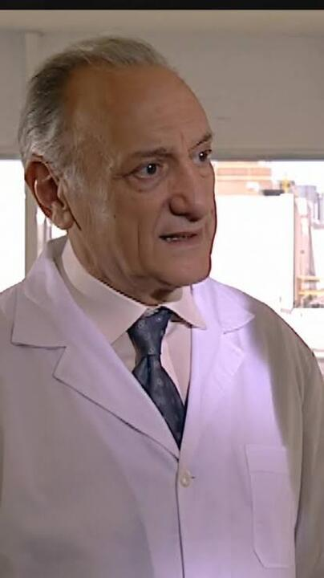
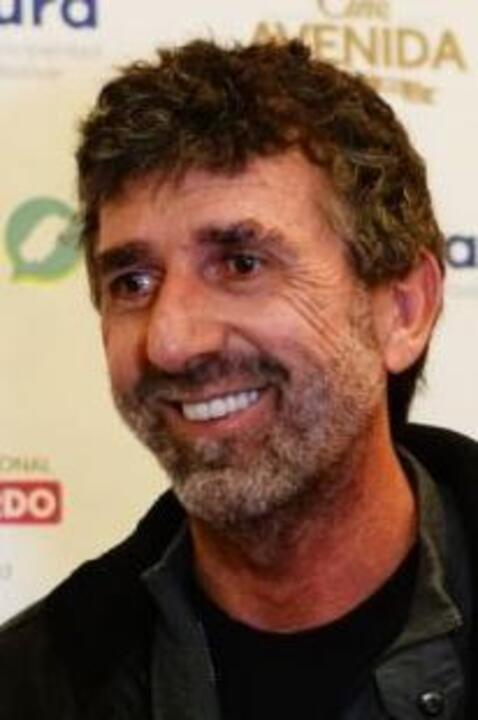
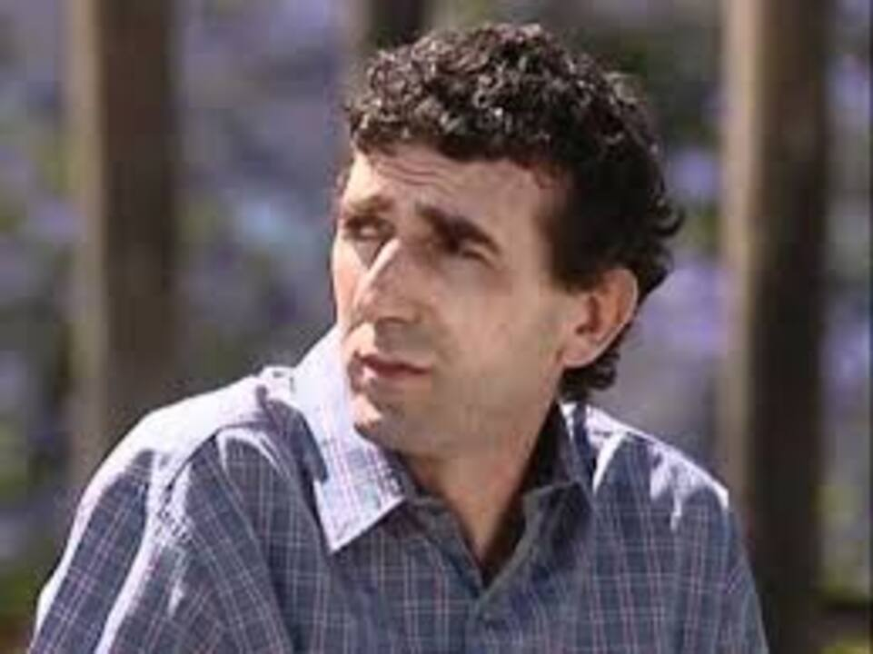
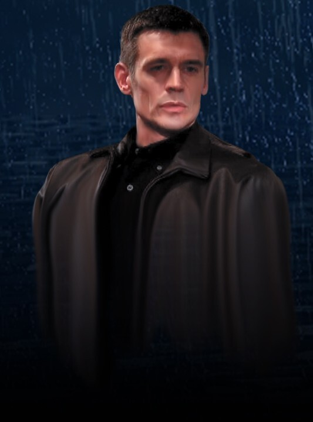
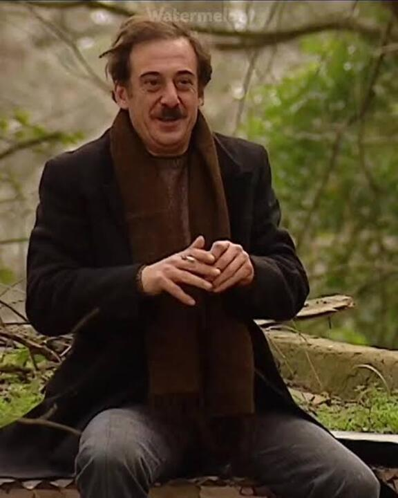

Mario Santos


Es el líder del grupo. Se destaca por su inteligencia, capacidad de planificación y habilidad para dirigir los operativos.
Emilio Ravenna


Es el especialista en actuación y caracterización. Puede adoptar diferentes personalidades y apariencias para llevar adelante los planes.
Pablo Lamponne


Se encarga principalmente de la logística, la acción y los aspectos más físicos de los operativos.
Gabriel Medina


Es el encargado de la investigación y la tecnología. Aporta conocimientos técnicos y ayuda a reunir información sobre cada caso.
José Feller


Es uno de los personajes secundarios más cercanos al grupo. Los Simuladores lo ayudan a recuperar su trabajo y, posteriormente, se convierte en uno de sus colaboradores. En la Brigada B se encarga de las caracterizaciones, cumpliendo una función similar a la de Ravenna.
Lucio Bonelli


Es un hombre al que Los Simuladores ayudan a resolver un problema relacionado con una deuda. Luego de ese encuentro, comienza a colaborar con ellos y pasa a formar parte de la Brigada B, donde se encarga de la técnica y movilidad.
Martín Vanegas


Es otro colaborador de Los Simuladores. Luego de ser ayudado con una deuda que ponía en peligro a su familia, se incorpora a la Brigada B y queda a cargo de la investigación
Franco Milazzo


Es uno de los personajes más importantes fuera del grupo principal y funciona como antagonista durante gran parte de la segunda temporada. Después de descubrir que fue engañado por Los Simuladores, regresa a Buenos Aires decidido a encontrarlos y vengarse.
Marcos Molero


Es un reconocido investigador privado que aparece principalmente en la segunda temporada. Milazzo recurre a él para localizar a Los Simuladores, convirtiéndose así en una pieza importante de la búsqueda del grupo.